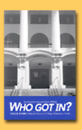

|

 Who
Got In? 2003
Amherst College
In 2002, our freshman class of 408 students is slightly smaller
than in 2001. The class was selected from the same number of
applications as in 2001. We accepted fewer students than in 2001.
We placed the same number of students on our wait list as in
2001, and accepted more students from our wait list than in 2001.
Compared to 2001, we admitted
the same number of Asian-American, the same number of African-American,
the same number of Hispanic, and the same number of Native American
students. About 30 percent of our student body comes from U.S.
minority groups. Our overall retention rate is 98 percent. About
95 percent of all our students graduate in five years.
Our 2002 yield of accepted students
who actually enrolled was 43 percent, the same as compared to
2001. We received more Early Decision/Early Action applications
than last year, and admitted the same number for 2002 as 2001.
About 31 percent of our 2002 first-year class was accepted ED/EA.
Our deadline for 2003 applications
is December 31. We do accept electronic applications. More students
applied electronically in 2002 than in 2001.
We accepted the same number of
international students in 2002 as in 2001. In 2002, our average
freshman test scores were 1416 combined SAT, 30.4 ACT. The economy
is not affecting our enrollment. About the same number of incoming
students are requesting financial aid. The student "melt
down" (or number of students who said they were enrolling
but didn't) did not increase over the summer of 2002.
Our 2002-2003 tuition is $27,800.
About 44 percent of our students receive financial aid. The average
aid package is $25,534.
First-year students are eligible
to win the following merit scholarships: "All financial
aid money is need based." The following special or freshman
experience program is available: "Freshman Orientation (7-day
program)."
The most important thing we want
prospective students to know about our school is: "Amherst
offers an open curriculum and is part of a 5-college consortium."
The most popular majors or programs on our campus are: English,
History, Political Science and Biology.
We spotted the following admissions
trends: "Students continue to be increasingly qualified."
We advised 2003 applicants to
"Go for the 'right fit', not the 'right' school and fall
in love with as many schools as possible so you'll be happy at
any number of institutions."
Cate Grayer-Zolkes, Associate
Dean, completed the survey. Amherst College, P.O. Box 5000, Amherst,
Massachusetts, 01002; (413) 542-2328; e-mail address, ogzolka@amherst.edu.
Michigan State University
In 2002, our freshman
class of 6,886 students is larger than in 2001. The class was
selected from 25,210 applications, more than in 2001. We accepted
16,977 students, more than in 2001. We placed 950 students on
our wait list, than in 2001, and accepted 275 students, fewer
than in 2001. Approximately 1,632 students transferred to the
school.
Compared to 2001, we admitted more Asian-American, more African-American,
more Hispanic, and fewer Native American students. About 16.4
percent of our student body comes from U.S. minority groups.
About 63 percent of all our students graduate in five years (1995
cohort).
Our 2002 yield of accepted students
who actually enrolled was about 40.6 percent, lower compared
to 2001.
Our deadline for 2003 applications
is a rolling. We do accept electronic applications. More students
applied electronically in 2002, than in 2001.
We accepted 1,801 international
students in 2002, more than in 2001. In 2002, our average freshman
test scores were 1131.2 combined SAT, 24.2 ACT. More incoming
students are requesting financial aid. The student "melt
down" (or number of students who said they were enrolling
but didn't) did not increase over the summer of 2002.
Our 2002-2003 tuition for in-state
is $6,142.50 and $15,210 for out-of-state. About 39 percent of
our undergraduate students receive financial aid. The average
aid package is $8,000.
"We have many long-established
scholarships for first-year students." The following special
or freshman experience programs are available: "Academic
Orientation Program and Class Connections."
The most important thing we want
prospective students to know about our school is: "Michigan
State University is accessible, affordable and has a quality
undergraduate education." The most popular majors or programs
on our campus are: Business-Marketing, Psychology and Advertising.
We advise 2003 applicants to:
"Apply early in the senior year, stick to a strong academic
curriculum, and keep grades up."
Judy Eberlein, Enrollment Services
Coordinator, completed the survey. Michigan State University,
250 Administration Building, East Lansing, Michigan, 48840; (517)
355-8332; e-mail address, eberleij@msu.edu.
The University of Texas at Austin
In 2002, our freshman
class of 7,936 students is larger than in 2001. The class was
selected from 24,797 applications, more than in 2001. We accepted
13,483 students, more than in 2001. Approximately 3,180 students
transferred to the school.
Compared to 2001, we admitted
more Asian-American, more African-American, more Hispanic, and
more Native American students. About 39.4 percent of our student
body comes from U.S. minority groups. Our retention rate for
minority students is about 92 percent for one year; 84 percent
for two years. About 64.8 percent of all our students graduate
in five years.
Our 2002 yield of accepted students
who actually enrolled was about 59 percent, higher compared to
2001
Our deadline for 2003 applications
is February 1. We do accept electronic applications. About 75
percent of students applied electronically in 2002, more than
in 2001.
We accepted 383 international
students in 2002, more than in 2001. In 2002, our average freshman
test scores were 1228 combined SAT, 26 ACT. The economy is affecting
our enrollment, with "higher yield rates." The student
"melt down" (or number of students who said they were
enrolling but didn't) did not increase over the summer of 2002.
Our 2002-2003 tuition is resident
- $5,340; non-resident - $11,446.
First-year students are eligible
to win the following merit scholarships: "National Merit,
National Achievement, Presidential Achievement, National Hispanic
Scholars and many more." "We have many freshman programs."
Among 2003 applicants, we seek the following special skills or
talents: "Leadership and academic achievement."
The most important thing we want
prospective students to know about our school is: "Apply
Early." The most popular majors or programs on our campus
are: Liberal Arts-undeclared, Biology and Computer Science. The
new majors or programs are: Bio-Medical Engineering.
In 2002, we spotted the following
admissions trends: "Significantly more applications of higher-qualified
students." We advise 2003 applicants to: "Take care
with essays-meet deadlines."
Gary M. Lavergne, Admissions
Research, completed the survey. The University of Texas at Austin,
Main 7, Austin, Texas 78712.
|